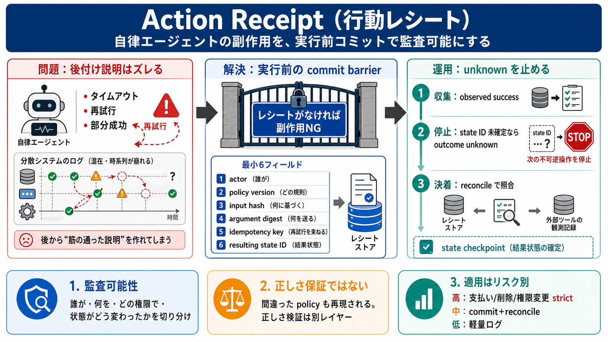

i. actor
実行主体（誰が）/ 実行ID

自律エージェントが外部ツールに副作用を与えるなら、事後の言い訳ではなく「実行前に確定する行動レシート」で監査可能性（誰が・何を・どの権限で・状態がどう変わったか）を確保します。
分散システムではタイムアウト、再試行、部分成功が起き、後からログや要約で「筋が通った説明」を作れます。そのズレが、監査や責任追及を曖昧にします。
行動レシートは、説明の代替ではなく「検証不能なら次に進めない」ためのゲート（commit barrier）です。正しさ保証ではなく、再現可能な責任切り分けを先に固定します。
※日本語：actor（実行主体） / policy（ポリシー） / digest（要約） / idempotency（冪等） / state（状態）
目的：成功応答を「完了」と誤解せず、未確定を次の不可逆処理へ持ち込まないこと。
レシートは「書いたこと」ではなく「再生可能性（replay）」として効きます。
レシートがあっても、適用ポリシーが誤っていれば「間違った行動」も正確に再現され得ます。つまりレシートは正しさの保証でなく、再現可能な責任切り分けです。
成功応答が返っても state ID が確定しないなら、成功/失敗に倒さず outcome unknown として扱い、依存する次の不可逆アクションを止めます。
耐久コミットと外部検証はコスト（レイテンシ、保存量、運用負担）を増やします。全てのツール呼び出しへ一律適用すると破綻し得るため、副作用の不可逆性に応じて分類して適用します。
自律エージェントの説明力は監査の代替になりません。価値が出るのは、レシートが「実行ゲート」として強制され、unknown を未確定として止め、外部観測で確定して初めて次へ進める設計にしたときです。
No references found